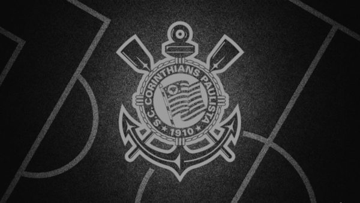
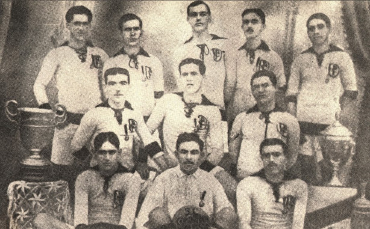
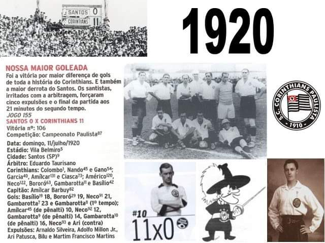
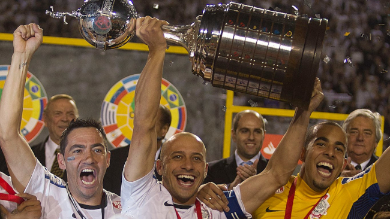
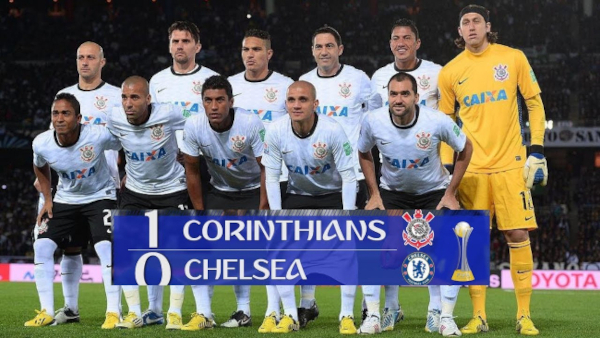
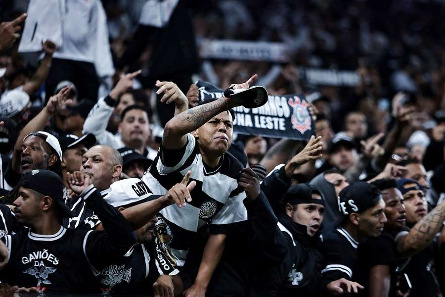

O Corinthians, oficialmente Sport Club Corinthians Paulista, é um dos maiores e mais tradicionais clubes de futebol do Brasil. Fundado em 1º de setembro de 1910, em São Paulo, o time tem uma história marcada pela paixão de sua imensa torcida, conhecida como "Fiel", considerada uma das mais fanáticas do país. O clube é multicampeão, com destaque para conquistas como a Libertadores da América (2012), o Mundial de Clubes da FIFA (2000 e 2012), além de diversos títulos nacionais como o Campeonato Brasileiro (7 vezes) e a Copa do Brasil. Também é recordista de títulos do Campeonato Paulista. Mais que um time, o Corinthians representa a força do povo, nascido das classes trabalhadoras de São Paulo. Seu lema, “Corinthians é mais que um clube, é uma nação”, reflete sua grandeza dentro e fora dos gramados. É um dos clubes mais populares do Brasil e da América Latina.
Além de sua grandeza dentro de campo, o Corinthians tem uma história rica em identidade social e cultural. Foi fundado por operários que queriam um time que representasse o povo, em contraste com os clubes elitizados da época. Desde então, o clube carrega a marca da resistência, da luta e da paixão popular. O Corinthians também tem um papel importante fora do futebol, com forte presença na mídia, marketing esportivo e ações sociais. Sua arena, a Neo Química Arena, construída para a Copa do Mundo de 2014, é um dos estádios mais modernos do Brasil. A fiel torcida corinthiana é considerada o 2º maior número de torcedores no país, sempre demonstrando apoio incondicional, mesmo nos momentos difíceis. Isso faz do Corinthians um símbolo de lealdade, superação e amor ao esporte. Em resumo, o Corinthians é mais que um time: é um fenômeno cultural que move milhões de pessoas.


O Corinthians foi fundado em 1º de setembro de 1910, por um grupo de operários do bairro do Bom Retiro, em São Paulo. Inspirados por um time inglês que estava em excursão pelo Brasil (o Corinthian FC), eles decidiram criar um clube popular, acessível ao povo, diferente dos clubes da elite da época. O nome "Corinthians" foi escolhido em homenagem ao time inglês, e desde o início o clube carregou o lema de ser "o time do povo". Rapidamente conquistou espaço no futebol paulista, vencendo seu primeiro Campeonato Paulista em 1914. A partir daí, começou a construir sua trajetória de sucesso e paixão popular, se tornando um dos clubes mais vitoriosos e amados do Brasil.
A origem do Corinthians está profundamente ligada à luta por inclusão e representatividade no futebol brasileiro. No início do século XX, o futebol era um esporte elitista, praticado principalmente por clubes ligados à alta sociedade. Foi nesse cenário que cinco operários – João da Silva, Antônio Pereira, Rafael Perrone, Anselmo Correia e Carlos Silva – decidiram criar um clube que representasse os trabalhadores. Com uma bola emprestada e lamparinas para treinar à noite, o Corinthians começou de forma humilde. Mas logo ganhou o carinho do povo e cresceu rapidamente. Em 1913, entrou oficialmente na Liga Paulista e, em 1914, já conquistou seu primeiro título. Durante as décadas seguintes, o clube foi acumulando títulos estaduais e, com o tempo, se consolidou nacionalmente. Um dos momentos mais marcantes da história recente foi a conquista do Campeonato Brasileiro de 1990, o primeiro da história do clube, e depois a Libertadores e o Mundial de 2012, coroando a era moderna com títulos internacionais de peso. O Corinthians também teve fases difíceis, como o jejum de títulos entre 1954 e 1977, mas sua torcida permaneceu fiel – o que reforçou ainda mais a identidade de clube do povo, de resistência e paixão. Essa origem humilde e a relação forte com o torcedor são marcas que definem o Corinthians até hoje.


O Corinthians é um dos clubes mais vitoriosos e tradicionais do Brasil, com uma história rica em conquistas nacionais e internacionais. Fundado em 1910, o clube acumula títulos que marcaram gerações de torcedores e consolidaram sua fama como um dos gigantes do futebol sul-americano.
No cenário internacional, o Corinthians é bicampeão do Mundial de Clubes da FIFA, com títulos em 2000 (primeiro campeão mundial reconhecido pela FIFA) e 2012, quando venceu o Chelsea na final com gol de Paolo Guerrero. No mesmo ano, conquistou sua primeira Copa Libertadores da América, de forma invicta, superando o tradicional Boca Juniors na final — um dos momentos mais memoráveis da história do clube. Em 2013, ainda venceu a Recopa Sul-Americana em cima do São Paulo.
Em competições nacionais, o clube é heptacampeão brasileiro, com títulos em 1990, 1998, 1999, 2005, 2011, 2015 e 2017, além de três títulos da Copa do Brasil (1995, 2002 e 2009) e uma Supercopa do Brasil em 1991. Também é campeão da Série B de 2008, título que simbolizou a volta por cima após o rebaixamento do ano anterior. No futebol estadual, o Corinthians é o maior campeão do Campeonato Paulista, com 31 títulos, desde o primeiro em 1914 até o mais recente em 2025. Destaque para o título de 1977, que encerrou um jejum de 23 anos e entrou para a história com o gol de Basílio. Outro marco foi o tricampeonato consecutivo de 2017, 2018 e 2019. Além do time principal, o Corinthians também se destaca na base, sendo o maior campeão da Copa São Paulo de Futebol Júnior, com 10 títulos, e no futebol feminino, com uma equipe dominante que já conquistou diversas vezes a Libertadores Feminina e o Campeonato Brasileiro Feminino. Com títulos inesquecíveis, campanhas históricas e o apoio de uma das torcidas mais apaixonadas do mundo, o Corinthians construiu uma trajetória de glórias, raça e superação, que o coloca entre os maiores clubes da história do futebol mundial.

A torcida do Corinthians, conhecida como Fiel Torcida, é uma das maiores e mais apaixonadas do Brasil e do mundo. Ela é famosa por seu amor incondicional ao clube, apoiando o time nos bons e maus momentos, o que rendeu ao Corinthians a fama de ser "o time do povo". Com presença constante nos estádios, a Fiel se destaca por festas impressionantes, cantos que não param durante os jogos e por fazer a diferença em campo, empurrando o time com sua energia. Foi essa torcida que permaneceu firme durante o jejum de títulos entre 1954 e 1977, e que lotou estádios mesmo na Série B, em 2008, mostrando que não abandona o clube em nenhuma fase. Além disso, a torcida do Corinthians tem forte papel social e cultural. Ela participou de momentos marcantes da história do clube, como na Democracia Corinthiana nos anos 80, um movimento liderado por jogadores e apoiado pela torcida que uniu futebol e política, defendendo a liberdade e a participação democrática. A Fiel é considerada a segunda maior torcida do Brasil, com milhões de torcedores espalhados por todo o país e pelo mundo. Sua paixão vai além do futebol: é um símbolo de identidade, orgulho e resistência. Ser corinthiano é mais do que torcer, é viver intensamente uma paixão que passa de geração em geração.
A torcida do Corinthians, carinhosamente chamada de "Fiel", é um dos maiores símbolos da identidade do clube. Ela representa não apenas o amor pelo futebol, mas também a força de um povo que encontra no Corinthians um reflexo de suas lutas, vitórias e resistência. Com milhões de torcedores, é considerada a segunda maior torcida do Brasil, ficando atrás apenas do Flamengo, mas com um nível de envolvimento e lealdade que a torna única. A Fiel é conhecida mundialmente por sua paixão incondicional. Não importa a fase do time: estádio cheio, cantos intensos e apoio total. Essa devoção ficou evidente em momentos históricos, como no rebaixamento de 2007, quando a torcida lotou os estádios mesmo na Série B, em 2008, mostrando que o amor pelo Corinthians está acima dos resultados. Foi chamada de “a torcida que nunca abandona”. Outro marco foi o título do Campeonato Paulista de 1977, que pôs fim ao jejum de 23 anos sem títulos. A comoção foi tão grande que torcedores invadiram o campo para celebrar com os jogadores. E não se pode esquecer do título mundial de 2012, no Japão, onde mais de 30 mil corinthianos viajaram para apoiar o time na final contra o Chelsea — uma das maiores mobilizações internacionais de torcedores da história do futebol. A Fiel também teve papel importante em momentos políticos e sociais. Durante os anos 80, apoiou o movimento da Democracia Corinthiana, liderado por Sócrates, Casagrande e outros, que defendia mais participação dos jogadores nas decisões do clube — e simbolizava, fora de campo, a luta contra a ditadura militar. Organizada, criativa e participativa, a torcida se expressa em músicas, bandeiras, faixas, mosaicos e até grafites nas ruas. É responsável por transformar a Neo Química Arena em um verdadeiro caldeirão, reconhecido pela pressão e atmosfera intensa. Mais do que apenas torcer, ser da Fiel é um estilo de vida. É herança de família, é cultura de bairro, é orgulho de vestir o preto e branco. É carregar no peito a alma de um time que nasceu do povo e vive para o povo. Por isso, o Corinthians não é apenas um clube. É uma nação movida por uma das torcidas mais apaixonadas do planeta.